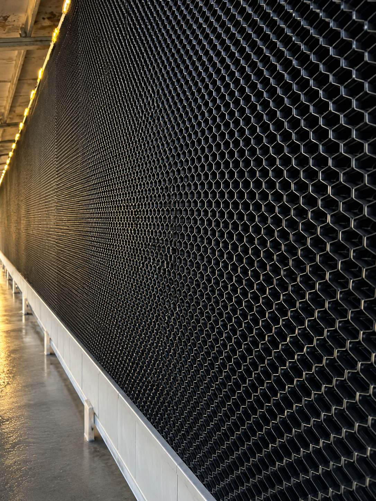
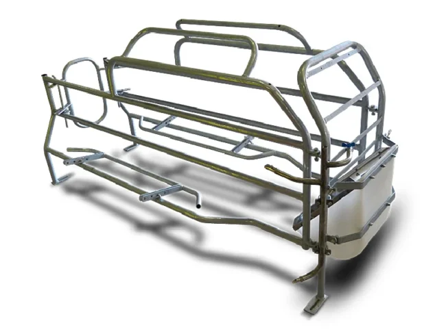
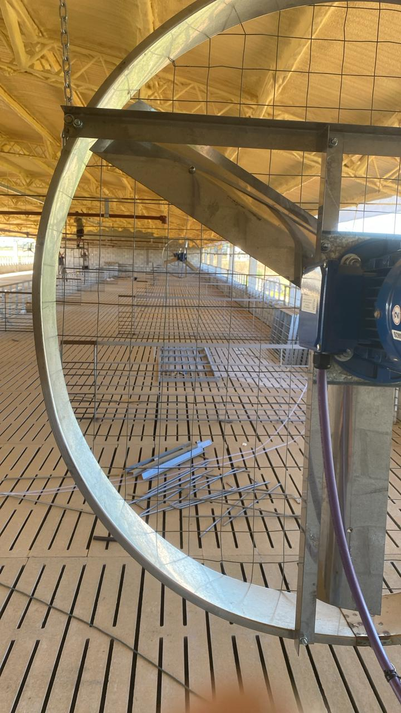
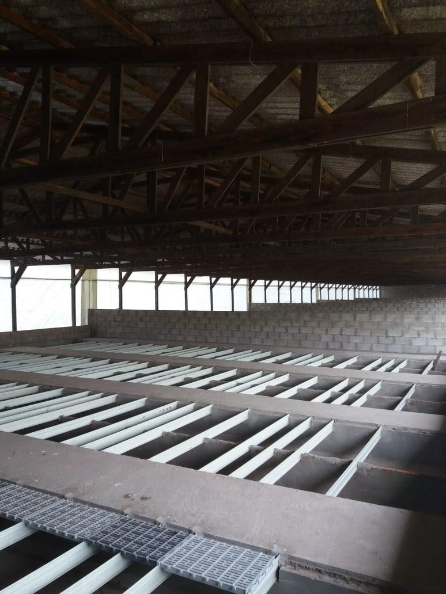

Diseñamos e instalamos equipamiento porcino para granjas modernas.
Consultanos y potenciá tu granjaEquipamiento diseñado para cada fase del sistema productivo.
Sistemas que garantizan bienestar de la cerda y eficiencia reproductiva.
Equipamiento diseñado para mejorar supervivencia y manejo de lechones.
Ambientes controlados que favorecen crecimiento uniforme y sanidad.
Infraestructura optimizada para conversión alimenticia y productividad.
Equipamiento diseñado para optimizar la eficiencia productiva, el bienestar animal y el manejo en granjas porcinas modernas.

Equipos diseñados para optimizar la distribución de alimento, mejorar la conversión alimenticia y reducir desperdicios en las distintas etapas de producción.

Soluciones que permiten mantener condiciones térmicas adecuadas dentro de las instalaciones, favoreciendo el bienestar animal y el rendimiento productivo.

Sistemas que garantizan renovación de aire, control de humedad y reducción de gases, contribuyendo a un ambiente sanitario óptimo dentro de la granja.
Algunos de los productos más utilizados en granjas porcinas.

Optimiza el consumo y reduce el desperdicio de alimento.

Organización eficiente de corrales según tamaño y edad.

Mayor higiene, seguridad y confort para todas las etapas.

Ajustable según el tamaño de la cerda, ideal para maternidad.

Ventilación adecuada para mantener calidad de aire y condiciones sanitarias óptimas.
Control térmico eficiente para mejorar el confort animal y el rendimiento productivo.
Acompañamos tu proyecto desde el diseño hasta la puesta en marcha.

Instalación profesional y eficiente de equipamiento porcino adaptada a cada sistema productivo.

Coordinación y ejecución de obras para granjas porcinas, garantizando funcionalidad y eficiencia productiva.